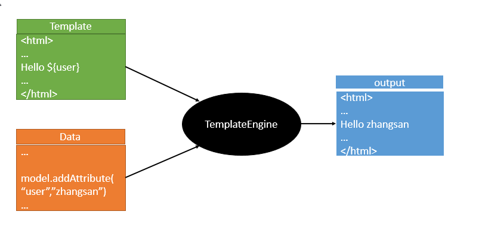

原文出处:本文由博客园博主ITfxsen提供。
原文连接:https://www.cnblogs.com/fxsenblog/p/11707618.html
原文连接:https://www.cnblogs.com/fxsenblog/p/11707618.html
Thymeleaf模板引擎的使用
一、模板引擎
JSP、Velocity、Freemarker、Thymeleaf

二、springboot推荐使用Thymeleaf模板引擎
特点：语法更简单，功能更强大；
1、引入Thymeleaf
<dependency>
<groupId>org.springframework.boot</groupId>
<artifactId>spring-boot-starter-thymeleaf</artifactId>
</dependency>2、Thymeleaf的使用
@ConfigurationProperties(prefix = "spring.thymeleaf")
public class ThymeleafProperties {
private static final Charset DEFAULT_ENCODING = Charset.forName("UTF-8");
private static final MimeType DEFAULT_CONTENT_TYPE = MimeType.valueOf("text/html");
public static final String DEFAULT_PREFIX = "classpath:/templates/";
public static final String DEFAULT_SUFFIX = ".html";只要我们把HTML页面放在classpath:/templates/，thymeleaf就能自动渲染；
3、导入thymeleaf的名称空间
<html lang="en" xmlns:th="http://www.thymeleaf.org">4、使用thymeleaf语法
<!DOCTYPE html>
<html lang="en" xmlns:th="http://www.thymeleaf.org">
<head>
<meta charset="UTF-8">
<title>Title</title>
</head>
<body>
<h1>成功！</h1>
<!--th:text 将div里面的文本内容设置为 -->
<div th:text="${hello}">这是显示欢迎信息</div>
</body>
</html>三、语法规则
1、th:text；改变当前元素里面的文本内容；th：任意html属性；来替换原生属性的值

2、表达式
Simple expressions:（表达式语法）
Variable Expressions: ${...}：获取变量值；OGNL；
1）、获取对象的属性、调用方法
2）、使用内置的基本对象：
#ctx : the context object.
#vars: the context variables.
#locale : the context locale.
#request : (only in Web Contexts) the HttpServletRequest object.
#response : (only in Web Contexts) the HttpServletResponse object.
#session : (only in Web Contexts) the HttpSession object.
#servletContext : (only in Web Contexts) the ServletContext object.
${session.foo}
3）、内置的一些工具对象：
#execInfo : information about the template being processed.
#messages : methods for obtaining externalized messages inside variables expressions, in the same way as they would be obtained using #{…} syntax.
#uris : methods for escaping parts of URLs/URIs
#conversions : methods for executing the configured conversion service (if any).
#dates : methods for java.util.Date objects: formatting, component extraction, etc.
#calendars : analogous to #dates , but for java.util.Calendar objects.
#numbers : methods for formatting numeric objects.
#strings : methods for String objects: contains, startsWith, prepending/appending, etc.
#objects : methods for objects in general.
#bools : methods for boolean evaluation.
#arrays : methods for arrays.
#lists : methods for lists.
#sets : methods for sets.
#maps : methods for maps.
#aggregates : methods for creating aggregates on arrays or collections.
#ids : methods for dealing with id attributes that might be repeated (for example, as a result of an iteration).
Selection Variable Expressions: *{...}：选择表达式：和${}在功能上是一样；
补充：配合 th:object="${session.user}：
<div th:object="${session.user}">
<p>Name: <span th:text="*{firstName}">Sebastian</span>.</p>
<p>Surname: <span th:text="*{lastName}">Pepper</span>.</p>
<p>Nationality: <span th:text="*{nationality}">Saturn</span>.</p>
</div>
Message Expressions: #{...}：获取国际化内容
Link URL Expressions: @{...}：定义URL；
@{/order/process(execId=${execId},execType='FAST')}
Fragment Expressions: ~{...}：片段引用表达式
<div th:insert="~{commons :: main}">...</div>
Literals（字面量）
Text literals: 'one text' , 'Another one!' ,…
Number literals: 0 , 34 , 3.0 , 12.3 ,…
Boolean literals: true , false
Null literal: null
Literal tokens: one , sometext , main ,…
Text operations:（文本操作）
String concatenation: +
Literal substitutions: |The name is ${name}|
Arithmetic operations:（数学运算）
Binary operators: + , - , * , / , %
Minus sign (unary operator): -
Boolean operations:（布尔运算）
Binary operators: and , or
Boolean negation (unary operator): ! , not
Comparisons and equality:（比较运算）
Comparators: > , < , >= , <= ( gt , lt , ge , le )
Equality operators: == , != ( eq , ne )
Conditional operators:条件运算（三元运算符）
If-then: (if) ? (then)
If-then-else: (if) ? (then) : (else)
Default: (value) ?: (defaultvalue)
Special tokens:
No-Operation: _